Phylogenetic Trees
Workshop on Data Visualization in R
Lokesh Mano • 02-Feb-2024
For this course, I have used one of my very simple tree from a few different organisms within the Archaea superkingdom. More specifically, it is the concatenated ribosomal protein tree within archaea, with representatives from the different Phyla: Asgard archaea (Thorarchaeota, Odinarchaeota, Lokiarchaeota and Heimdallarchaeota), TACK, Euryarchaeota and DPANN. The maximum likelihood phylogeny was reconstructed in IQ-TREE with the LG+F+I+G4 model. The alignment was trimmed to 6,732 positions with the BMGE (Block Mapping and Gathering with Entropy) tool.
1 ggtree
ggtree is an R package that extends ggplot2 for visualizating and annotating phylogenetic trees with their covariates and other associated data. ggtree in combination with treeio supports several file formats, including:
read.treefor reading Newick files.read.phylipfor reading Phylip files.read.jplacefor reading Jplace files.read.nhxfor reading NHX files.read.beastfor parsing output of BEASTread.codemlfor parsing output of CODEML (rst and mlc files)read.codeml_mlcfor parsing mlc file (output of CODEML)read.hyphyfor parsing output of HYPHYread.jplacefor parsing jplace file including output from EPA and pplacerread.nhxfor parsing NHX file including output from PHYLODOG and RevBayesread.paml_rstfor parsing rst file (output of BASEML and CODEML)read.r8sfor parsing output of r8sread.raxmlfor parsing output of RAxML
2 Reading treefile
library(ggtree)
library(treeio)
arch_tree <- read.newick("data/arch_newick.txt")
arch_treeoutput
##
## Phylogenetic tree with 25 tips and 24 internal nodes.
##
## Tip labels:
## DPANN_Pace_RBG_13_36_9, DPANN_Woese_UBA94, EURY_Thermoplasma_volcanium_GSS1, Eury_Halobaculum_gomorrense, Eury_Methanothermococcus_okinawensis, TACK_Bathy_SMTZ80, ...
## Node labels:
## 100, 10.9, 100, 100, 72, 35.9, ...
##
## Rooted; includes branch lengths.Just like with ggplot2 we created a basic canvas with ggplot(...) and added layers with +geom_???(), we can do the same here. The ggtree package gives us a geom_tree() function. Because ggtree is built on top of ggplot2, you get ggplot2’s default gray theme with white lines. You can override this with a theme from the ggtree package.
Because you’ll almost always want to add a tree geom and remove the default background and axes, the ggtree() function is essentially a shortcut for ggplot(...) + geom_tree() + theme_tree().
ggtree(arch_tree)
#Same as:
#ggplot(arch_tree) + geom_tree() + theme_tree()plot
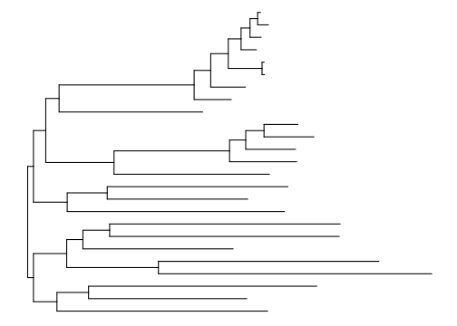
One can also customize how the tree looks like, just as in ggplot
ggtree(arch_tree, branch.length="none", color="blue", size=2, linetype=3)plot
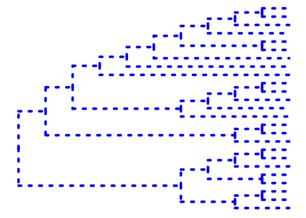
You can also use different orientations to show the tree.
ggtree(arch_tree, color="blue", layout = "circular")plot
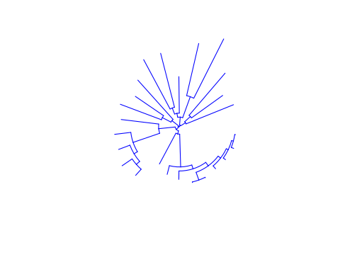
3 Geoms and annotation
Just like in ggplot() you can add layers to the tree as geoms.
p <- ggtree(arch_tree)
p + geom_tiplab(color = "blue") + theme_tree2()plot
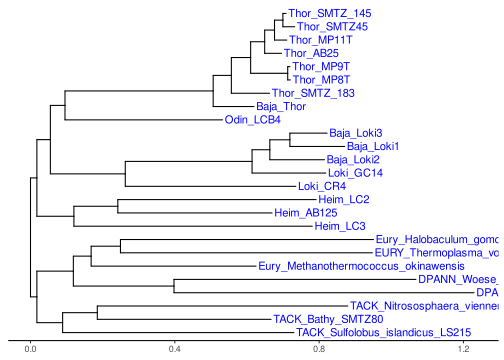
Before we can go further into annotating the tree, we need to understand how ggtree is handling the tree structure internally. Some of the functions in ggtree for annotating clades need a parameter specifying the internal node number. To get the internal node number, user can use geom_text to display it, where the label is an aesthetic mapping to the “node variable” stored inside the tree object (think of this like the continent variable inside the gapminder object).
p + geom_text(aes(label=node), hjust=-.3)plot
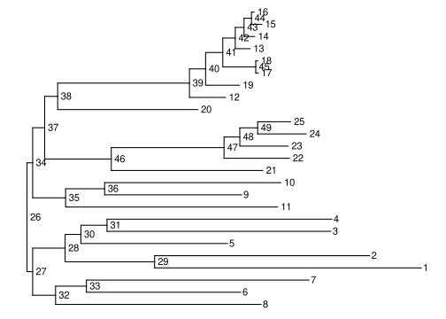
Another way to get the internal node number is using the function MRCA() which stands for Most Recent Common Ancestor. From the tree above, if you would like to get the number of the particular node that is common to all the “Lokiarchaea”. You can do so like below:
MRCA(arch_tree, .node1 = "Baja_Loki3", .node2 = "Loki_CR4")output
## [1] 463.1 Clade labeling
Now, let us see how we can use this information to make it scientifically intuitive.
p +
geom_cladelabel(node=46, label="Lokiarchaeota", color="green")plot
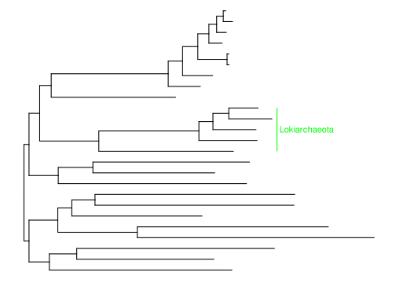
ALternatively, we can also highlight an entire clade:
p +
geom_hilight(node=39, fill = "purple") +
geom_cladelabel(node=39, label="Thorarchaeota", color="purple") +
geom_hilight(node=46, fill = "green") +
geom_cladelabel(node=46, label="Lokiarchaeota", color="green")plot
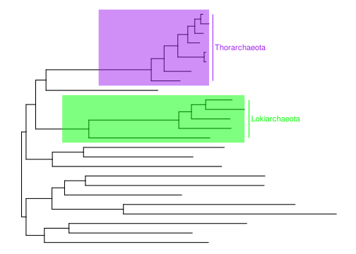
3.2 Taxa connections
You can make connections to represent processes like gene transfer events on the tree.
p +
geom_hilight(node=30, fill = "orange") +
geom_cladelabel(node=30, label="Euryarchaeota", color="orange") +
geom_hilight(node=46, fill = "green") +
geom_cladelabel(node=46, label="Lokiarchaeota", color="green") +
geom_taxalink("Eury_Methanothermococcus_okinawensis", "Loki_GC14", color = "red")plot
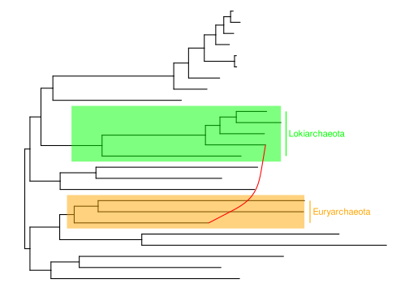
3.3 Group clades and OTUs
You can group the different tips using the groupOTU function or you can group the tips based on a node using groupClade function. These groups you can then further use it for other geoms and so on.
Let us say, we want to show the Asgrad archaea separately from the other archaea in this tree. One way to this would be:
3.3.1 groupOTU
arch_tree <- groupOTU(arch_tree, c("DPANN_Pace_RBG_13_36_9", "DPANN_Woese_UBA94",
"EURY_Thermoplasma_volcanium_GSS1", "Eury_Halobaculum_gomorrense", "Eury_Methanothermococcus_okinawensis",
"TACK_Bathy_SMTZ80", "TACK_Nitrososphaera_viennensis", "TACK_Sulfolobus_islandicus_LS215"))
ggtree(arch_tree, aes(color=group)) + geom_tiplab()plot
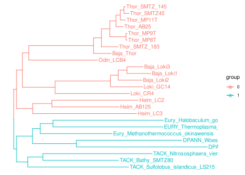
We can also get more detailed:
cls <- list(Heimdallarchaeota = c("Heim_AB125", "Heim_LC2", "Heim_LC3"),
Thorarchaeota = c("Baja_Thor", "Thor_AB25", "Thor_MP11T", "Thor_SMTZ45", "Thor_SMTZ_145", "Thor_MP8T", "Thor_MP9T", "Thor_SMTZ_183"),
Lokiarchaeota = c("Loki_CR4", "Loki_GC14", "Baja_Loki2", "Baja_Loki1", "Baja_Loki3"),
Odinarchaeota = "Odin_LCB4")
arch_tree <- groupOTU(arch_tree, cls)
ggtree(arch_tree) + geom_tiplab(aes(color=group)) +
scale_color_manual(values=c("black", rainbow(4)), labels = c("OutGroup", names(cls)))plot
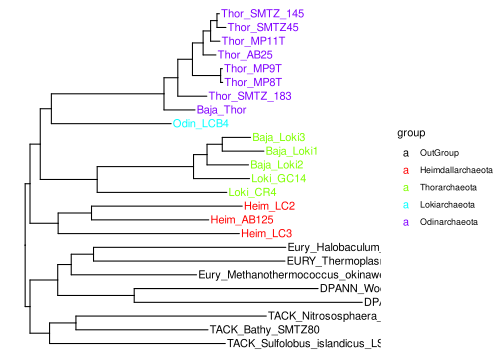
One thing to notice hear that you can group tips from different clades together as well.
baja <- list(Baja = c("Baja_Thor", "Baja_Loki2",
"Baja_Loki1", "Baja_Loki3"))
arch_tree <- groupOTU(arch_tree, baja)
ggtree(arch_tree) + geom_tiplab(aes(color=group)) +
scale_color_manual(values=c("black", "blue"),
labels = c("Public genomes", "Baja genomes"))plot
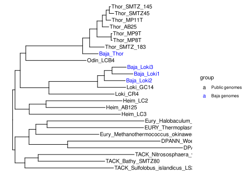
3.3.2 groupClade
Now, if we are only interested in showing the differences based on the clades, we can use groupClade.
arch_tree <- groupClade(arch_tree, c(39, 46, 35, 27))
ggtree(arch_tree) + geom_tiplab(aes(color=group)) +
scale_color_manual(values=c(rainbow(4), "black"),
labels = c("Odin", "Thor", "Loki", "Heimdall", "OutGroup"))plot
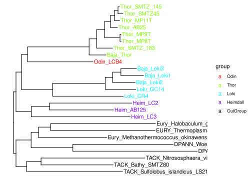
3.4 Showing bootstrap values
If you notice the tree object, it actually contains node.label that are bootstrap values.
arch_treeoutput
##
## Phylogenetic tree with 25 tips and 24 internal nodes.
##
## Tip labels:
## DPANN_Pace_RBG_13_36_9, DPANN_Woese_UBA94, EURY_Thermoplasma_volcanium_GSS1, Eury_Halobaculum_gomorrense, Eury_Methanothermococcus_okinawensis, TACK_Bathy_SMTZ80, ...
## Node labels:
## 100, 10.9, 100, 100, 72, 35.9, ...
##
## Rooted; includes branch lengths.There are different ways we could show this values on the tree. For example,
ggtree(arch_tree) + geom_nodelab() + geom_tiplab() + theme_tree()plot
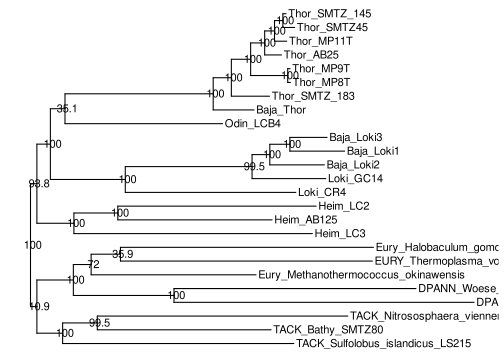
Now, let us say that you only want to show the values that are above 80, then you would have to do some trick here, like:
ggtree(arch_tree) +
geom_nodepoint(aes(subset = as.numeric(label) > 80), size = 3) +
geom_tiplab() +
theme_tree()plot
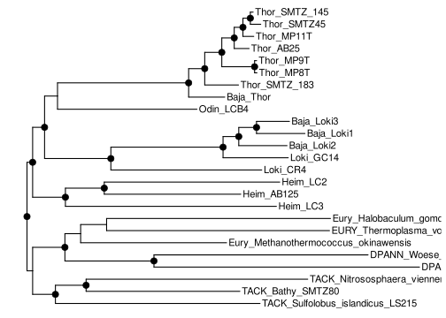
Note Notice that the node.label are in string, so must remember to use as.numeric() option be able to filter them to show them.
Note If the tree does not have bootstrap values with in the treefile, one can add them separately as a data.frame using %<+% function, as shown in the Adding data to tree section below.
3.5 Subsetting trees
It is possible to specific tips from the tree using drop.tip() fuction. Let us say, we want to remove Thor_SMTZ45 and Baja_Loki1, becuase of the reason that their genomes are not close to complete. We can do that by:
to_drop <- c("Thor_SMTZ45", "Baja_Loki1")
arch_tree_reduced <- drop.tip(arch_tree, to_drop)
arch_tree_reduced <- groupClade(arch_tree_reduced, c(37, 43, 33, 25))
ggtree(arch_tree_reduced) + geom_tiplab(aes(color=group)) +
scale_color_manual(values=c(rainbow(4), "black"),
labels = c("Odin", "Thor", "Loki", "Heimdall", "OutGroup"))plot
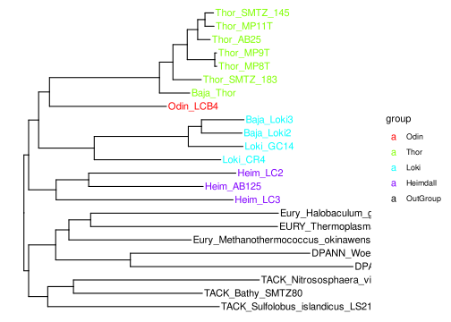
One can also subset a tree, by using the internal node number as shown in the exercises earlier. We can do this by using the tree_subset() function:
asg_tree <- treeio::tree_subset(arch_tree, node=34, levels_back=0)
ggtree(asg_tree) + geom_tiplab() Note The branch lengths and all the other information from the tree are maintained in the new object, when remove tips or subset a tree.
4 Adding data to tree
In this part, let us try to see what kind of ways one could add metadata to a tree.
4.1 Tables
env_info <- read.table("data/tree_env.tsv", sep="\t",
stringsAsFactor=F, row.names = 1, header = T)
p <- ggtree(arch_tree) +
geom_tiplab(aes(color=group)) +
scale_color_manual(values=c(rainbow(4), "black"),
labels = c("Odin", "Thor", "Loki", "Heimdall", "OutGroup")) +
theme(legend.position = "none")
gheatmap(p, env_info, offset = 4, width=1.5,
colnames_angle = 90, colnames_offset_y = 5,
legend_title = "Environment sampled") plot
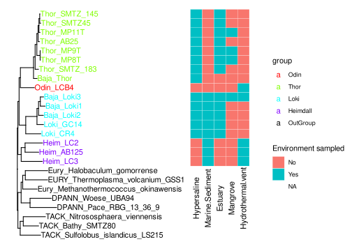
Similarly we can plot a heatmap:
env_hmap <- read.table("data/tree_hmap.tsv", sep="\t",
stringsAsFactor=F, row.names = 1, header = T)
p <- ggtree(arch_tree) +
geom_tiplab(aes(color=group)) +
scale_color_manual(values=c(rainbow(4), "black"),
labels = c("Odin", "Thor", "Loki", "Heimdall", "OutGroup")) +
theme(legend.position = "none")
gheatmap(p, env_hmap, offset = 4, width=1.5,
colnames_angle = 90, colnames_offset_y = 5,
legend_title = "Environment sampled") plot
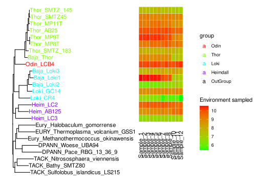
5 Session info
sessionInfo()## R version 4.1.3 (2022-03-10)
## Platform: x86_64-pc-linux-gnu (64-bit)
## Running under: Ubuntu 22.04.3 LTS
##
## Matrix products: default
## BLAS: /usr/lib/x86_64-linux-gnu/openblas-pthread/libblas.so.3
## LAPACK: /usr/lib/x86_64-linux-gnu/openblas-pthread/libopenblasp-r0.3.20.so
##
## locale:
## [1] LC_CTYPE=C.UTF-8 LC_NUMERIC=C LC_TIME=C.UTF-8
## [4] LC_COLLATE=C.UTF-8 LC_MONETARY=C.UTF-8 LC_MESSAGES=C.UTF-8
## [7] LC_PAPER=C.UTF-8 LC_NAME=C LC_ADDRESS=C
## [10] LC_TELEPHONE=C LC_MEASUREMENT=C.UTF-8 LC_IDENTIFICATION=C
##
## attached base packages:
## [1] grid stats graphics grDevices utils datasets methods
## [8] base
##
## other attached packages:
## [1] treeio_1.27.0.002 ggtree_3.11.0 pheatmap_1.0.12
## [4] swemaps_1.0 mapdata_2.3.1 maps_3.4.2
## [7] gridExtra_2.3 jpeg_0.1-10 ggpubr_0.6.0
## [10] cowplot_1.1.3 ggthemes_5.0.0 scales_1.3.0
## [13] ggrepel_0.9.5 wesanderson_0.3.7 forcats_1.0.0
## [16] stringr_1.5.1 purrr_1.0.2 readr_2.1.5
## [19] tidyr_1.3.1 tibble_3.2.1 tidyverse_2.0.0
## [22] reshape2_1.4.4 ggplot2_3.4.4 formattable_0.2.1
## [25] kableExtra_1.4.0 dplyr_1.1.4 lubridate_1.9.3
## [28] leaflet_2.2.1 yaml_2.3.8 fontawesome_0.5.2.9000
## [31] captioner_2.2.3 bookdown_0.37 knitr_1.45
##
## loaded via a namespace (and not attached):
## [1] nlme_3.1-155 fs_1.6.3 RColorBrewer_1.1-3
## [4] tools_4.1.3 backports_1.4.1 bslib_0.6.1
## [7] utf8_1.2.4 R6_2.5.1 lazyeval_0.2.2
## [10] mgcv_1.8-39 colorspace_2.1-0 withr_3.0.0
## [13] tidyselect_1.2.0 compiler_4.1.3 cli_3.6.2
## [16] xml2_1.3.6 labeling_0.4.3 sass_0.4.8
## [19] yulab.utils_0.1.4 systemfonts_1.0.5 digest_0.6.34
## [22] rmarkdown_2.25 svglite_2.1.3 pkgconfig_2.0.3
## [25] htmltools_0.5.7 fastmap_1.1.1 highr_0.10
## [28] htmlwidgets_1.6.4 rlang_1.1.3 rstudioapi_0.15.0
## [31] gridGraphics_0.5-1 jquerylib_0.1.4 farver_2.1.1
## [34] generics_0.1.3 jsonlite_1.8.8 crosstalk_1.2.1
## [37] car_3.1-2 magrittr_2.0.3 ggplotify_0.1.2
## [40] patchwork_1.2.0 Matrix_1.6-5 Rcpp_1.0.12
## [43] munsell_0.5.0 fansi_1.0.6 ape_5.7-1
## [46] abind_1.4-5 lifecycle_1.0.4 stringi_1.8.3
## [49] carData_3.0-5 plyr_1.8.9 parallel_4.1.3
## [52] lattice_0.20-45 splines_4.1.3 hms_1.1.3
## [55] pillar_1.9.0 ggsignif_0.6.4 glue_1.7.0
## [58] evaluate_0.23 ggfun_0.1.4 leaflet.providers_2.0.0
## [61] vctrs_0.6.5 tzdb_0.4.0 gtable_0.3.4
## [64] cachem_1.0.8 xfun_0.41 broom_1.0.5
## [67] tidytree_0.4.6 rstatix_0.7.2 viridisLite_0.4.2
## [70] aplot_0.2.2 memoise_2.0.1 timechange_0.3.0
## [73] ellipsis_0.3.2